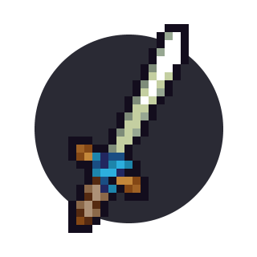

Chapter 1 Knight I: The basics

1.1 The knight class
There are 3 main classes in KAG: the archer, the builder and the knight. The knight is arguably the strongest class of the game. A good team in Capture The Flag or Take The Halls should be mostly composed of knights protecting builders and archers. In Team Deathmatch the knight is the most often played class as well.
As a knight in CTF and TTH, your role is to help the team advance forward to capture the enemy flag or hall. Before you learn more about game modes and how to play in a team, let’s talk about the combat mechanics first.
1.2 Mechanics
As a knight, you can use your sword and shield to do the following stuff:
1.2.1 Jab
The simplest attack. It does 1 heart of damage.
1.2.2 Slash
Charged attack (it takes half a second to charge it – just watch the cursor), it does 2 hearts of damage and stuns the enemy for a short time. If the enemy is shielding, it stuns for a bit less time, and the enemy doesn’t get damaged.
Being able to do slashes as fast as possible is very important – you should be able to do them as soon as the cursor charges fully.
1.2.3 Double slash
Charged double attack (it takes 1 and 1/4 of a second to charge it, again, watch the cursor), does 4 hearts in total (if unshielded). If the enemy is shielding, the first slash pierces the shield, the second slash deals 2 hearts of damage.
For now you should keep in mind that if you jab a shield, you get stunned for a short while. Try avoiding doing that, because you can get jabbed during that moment, or in some cases even slashed:
1.2.4 Shield slide
Hold W and shield down while moving horizontally to slide.
1.2.5 Shield bash
Also known as a shield stun. If you quickly shield slide into someone, they can get stunned for a short time (and sometimes knocked back):
1.2.6 Shield glide
Use the shield as a parachute:
1.2.7 Stomping
Not really a knight-only move, but you can also stomp the enemy if you fall on him with enough momentum.
Of course, you can do much more with these moves – you can chain combos, slashing someone and then quickly jabbing them after, but you’ll learn about that later on. For now, it’s just important to know the theory on how the combat works. The one thing you should remember is to mostly use slashes for now – the most common mistake a newbie can do is to jab spam, which is easily counterable and can quickly get you killed.
1.3 Items
There are various knight-specific items, such as bombs and waterbombs, which can be bought at the knight workshop in CTF (25 coins for a bomb, 30 coins for a waterbomb), trader shop in TDM (20 coins for a bomb, 40 coins for a waterbomb) or generated by factories in TTH.
1.3.1 Bombs
Bombs can be activated with space bar button. It takes 4 seconds before a bomb explodes. You can throw bombs near enemies to damage them (the damage depends on how close the bomb was – 3 hearts or 1,5 hearts), or use it to do a bomb jump.
Keep in mind that if you throw the bomb too early the enemies can catch it and throw it back.
1.3.2 Waterbombs
Waterbombs explode on impact and stun for a short duration. If shielded, they stun for a slightly shorter time. You can also put a sponge in your inventory (bought at TDM trader shop or CTF builder shop) which will also reduce the stun duration. If you successfully stun someone with it, you could for example kill him with a double slash.
In the above video the stunned person had a sponge in the inventory.
1.3.3 Mines
Mines can be bought for 60 coins in a knight shop and can be activated by all classes. Mines activate after staying still on the ground for some time. Mines instakill enemies and can’t be shielded, so you should watch out for enemy mines! This is especially important when playing CTF and pushing with your team in a closed space – let the builders destroy the mines, don’t walk into them – if you walk into a mine and your teammates are also near, they will be killed as well
1.3.4 Kegs
Keg (costs 120 coins in knight shop) is a powerful and unshieldable explosive item with a 6 seconds fuse. You should avoid fighting enemies while holding a keg (you can’t put it in your inventory) because they may steal it and hurt your team (one of the most common mistakes that can be made). Generally, you should activate kegs in the middle of the enemy base or next to the enemy flag room.
1.4 Mobility
One of the most important things to learn when you’re starting to play KAG is how to navigate the terrain properly: if you don’t feel your character and its movement, you will have trouble slashing your enemies from a distance or even avoiding enemy attacks. You have to be able to move around obstacles freely, consistently use wall jumps, use your slash to gain additional momentum or jump forward while slashing to quickly move through terrain.
There’s not really much to explain here – it just takes a bit of practice. If you want to get better with movement faster, you can try experimenting with it on the solo gamemodes (Save the Princess, Challenges modes). You will learn more about mobility tricks at the start of the next chapter.
1.5 Getting good
Every time you die to someone, ask yourself the question – why did I die? Could I’ve done something to avoid death? Did I mess up timing or get baited by the enemy? Try to learn on your mistakes and minimize them as much as possible - look at what you’re doing wrong (jabbing enemy’s shield, bad slash timing and so on) and try optimizing your playstyle.
Remember to slash often – if you constantly slash, the enemies will be afraid to get closer to you. Make use of double slashes as well – the first slash pierces through the shield and the second one deals 2 hearts of damage, as mentioned earlier.
Don’t get demotivated if you’re not as good as you want to be – as we said earlier, at this level you just need to practice a lot and skill will come with time. Most of the players get stuck at what this guide considers the average level. The next chapters should help you getting past that point.